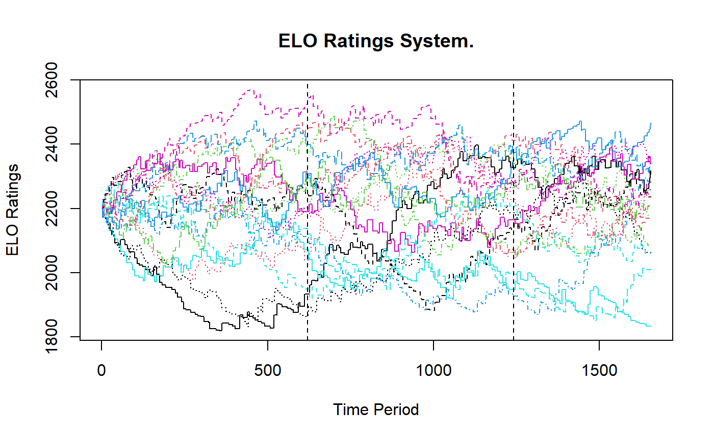
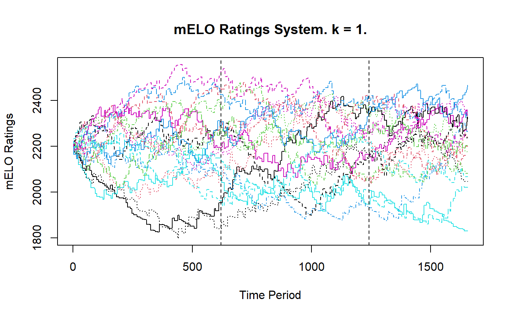
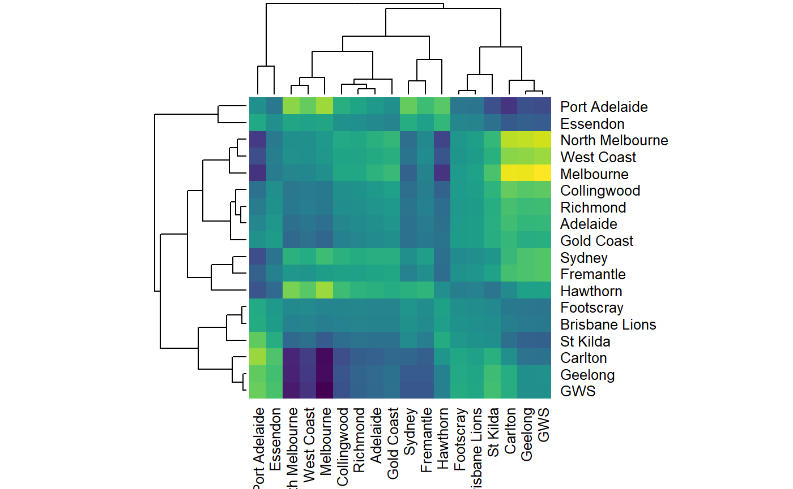
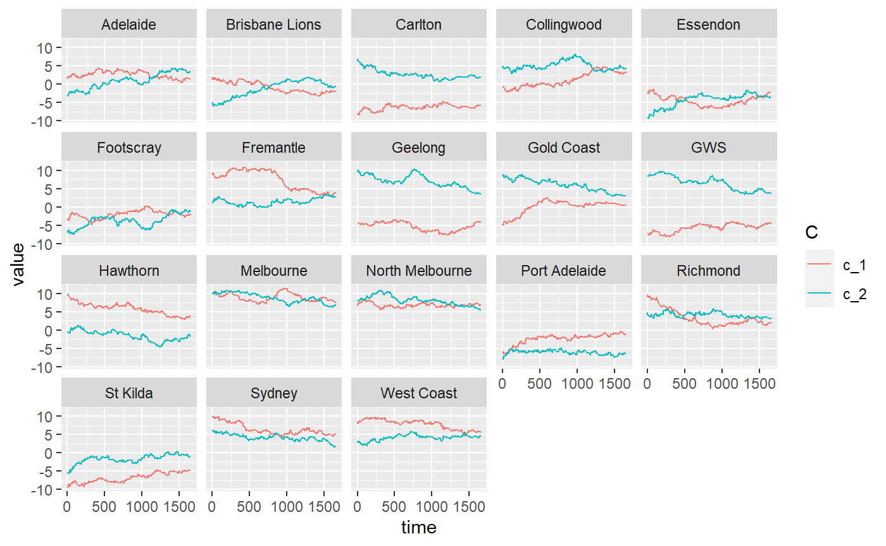

vignettes/02_afl.Rmd
02_afl.RmdAs demonstrated in the introductory vignette, Elo and other methods that rely on a single parameter that describe an agents ability cannot accomodate scenarios with cyclical or non-transitive interactions amongst agents or players. In situations where these behaviours are expected, a mELO model is likely to achieve far better results than an Elo model provided the outcomes aren’t too noisy and the agents abilities are locally stationary.
Note: Stationarity is important. If agents true abilities change too fast, statistical methods are not likely to yield useful estimates or predictions.
In this document we will use the mELO package to see if a mELO model can outperform a regular Elo model for the task of predicting the outcome of AFL matches. We do not expect the performance of the mELO model to be amazing. Other methods for predicting match outcomes that are more highly parameterised (such as Glicko or Steph as implemented in the PlayerRating package) or are able to make predictions conditional on additional information (other statistical or machine learning methods) would likely yield better results.
We will apply the following procedure to build models and assess their performance:
The initialisation step is necessary because the initial ratings for all agents will be set to the same value and the \(\textbf{C}\) matrix will have been initialised randomly. The first segment of the AFL match data is used to initialise the model so that reasonable estimates of \(\textbf{r}\) and \(\textbf{C}\) can be obtained and plugged in to the training model before we start calculating estimated model errors.
The outcomes we are modelling will be \(y \in \{0, 0.5, 1\}\) representing a loss, draw and win respectively.
We will use the logarithmic loss function (equivalent to cross-entropy in this setting) to evaluate model fits, calculated as \[ \mathcal{L(\Theta)} = - \frac{1}{n} \sum_{i=1}^n [y_{i} \log \, p_{i} + (1 - y_{i}) \log \, (1 - p_{i})].\] where \(i\) is the match index, \(n\) is the total number of matches we are calculating the loss over and \(\Theta\) is the set of model hyperparamters.
Note: Alternatively for step 2, because these are iterative procedures we can fit a model with the specified hyperparameters to the initialisation data + training data, and then in step 3 we only count the errors from the training data portion.
A large sample of AFL match data has been sourced using the excellent fitzRoy package and made available in the afl_df object.
# Load essential packages library(mELO) library(dplyr) # Inspect AFL match data head(afl_df) %>% knitr::kable()
| match_index | home_team | away_team | outcome | date | home_score | away_score |
|---|---|---|---|---|---|---|
| 1 | Richmond | Melbourne | 1 | 2000-03-08 | 94 | 92 |
| 2 | Essendon | Port Adelaide | 1 | 2000-03-09 | 156 | 62 |
| 3 | North Melbourne | West Coast | 0 | 2000-03-10 | 111 | 154 |
| 4 | Adelaide | Footscray | 0 | 2000-03-11 | 108 | 131 |
| 5 | Fremantle | Geelong | 0 | 2000-03-11 | 107 | 129 |
| 6 | St Kilda | Sydney | 0 | 2000-03-12 | 100 | 134 |
Split the data in to the required segments
# Initialisation data init_df <- afl_df %>% filter( date > as.Date("2012-01-01"), date < as.Date("2015-01-01") ) %>% select(match_index, home_team, away_team, outcome) # Training data train_df <- afl_df %>% filter( date > as.Date("2015-01-01"), date < as.Date("2018-01-01") ) %>% select(match_index, home_team, away_team, outcome) # Test data test_df <- afl_df %>% filter( date > as.Date("2018-01-01"), date < as.Date("2020-01-01") ) %>% select(match_index, home_team, away_team, outcome) # Combine init and train for convenience (See note above) init_train_df <- bind_rows( init_df, train_df ) # How many games in each data set n_init <- nrow(init_df) n_train <- nrow(train_df) n_test <- nrow(test_df)
For the sake of simplicity we will apply the homeground advantage to all teams playing at home. A more rigorous experiment would be to identify in which matches the away team had a travel disadvantage, and then set the home team to have an advantage in that match.
We begin by writing a function to help us perform step 2. This function returns the logloss over the training data for an Elo model fit with the specified hyperparameters, \(\Theta = (\eta, \gamma)\), the learning rate and home ground advantage respectively.
Note: The ELO() and mELO() functions return the true outcomes and the predictions for time \(t+1\) made at time \(t\) which make the loss calculations straightforward and removes the requirement to write a function to loop through matches.
# Function to return logloss for current selection of hyperparameters ELO_logloss_error <- function( hyperparams ){ # Fit model to INIT + TRAIN data model <- ELO( init_train_df, eta = hyperparams[1], # \eta p1_advantage = hyperparams[2], # \gamma save_history = FALSE ) # Calculate loss on the TRAIN data # Note these predictions are made before the ratings are updated train_logloss <- logloss( tail(model$preds, n_train), tail(model$outcomes, n_train) ) return(train_logloss) }
Now we can use an optimisation procedure to find the hyperparameters \(\Theta\) such that the logloss error is minimised.
# Optimisation (assuming it's smooth) ELO_best_params <- optim( c(30,100), ELO_logloss_error, method = "BFGS" ) ELO_best_params #> $par #> [1] 45.87521 78.29343 #> #> $value #> [1] 0.6118559 #> #> $counts #> function gradient #> 11 9 #> #> $convergence #> [1] 0 #> #> $message #> NULL
The best model is obtained when \(\eta=\) 45.88 and \(\gamma=\) 78.29 (where the logarithmic loss \(\mathcal{L}=\) 0.61). Now we can fit a model with these parameters and calculate the error on the test set.
# Fit model with optimal hyperparams optim_ELO_model <- ELO( bind_rows( init_train_df, test_df ), eta = ELO_best_params$par[1], # \eta p1_advantage = ELO_best_params$par[2], # \gamma ) # Generate predictions on test set test_preds_ELO <- tail(optim_ELO_model$preds, n_test) # Calculate logloss error on test set test_logloss_ELO <- logloss( test_preds_ELO, test_df$outcome ) # Calculate classification rate on test set test_class_rate_ELO <- mean( (as.numeric(test_preds_ELO >= 0.5) & test_df$outcome == 1) | (as.numeric(test_preds_ELO < 0.5) & test_df$outcome == 0) )
Results:
The figure below gives the evolutions of the Elo ratings. The vertical lines indicate the cut offs of the initialisation, training and test sets.

Similarly to the Elo model, we build a function to help us optimise the loss function.
# Function to return logloss for current selection of hyperparameters # k = 1 mELO_logloss_error <- function( hyperparams ){ # Set seed, C matrix is initialised randomly set.seed(1337) # Fit model to INIT + TRAIN data model <- mELO( init_train_df, # init_c_mat = matrix( # runif(2*1*18, -5, 5), # ncol = 2, # nrow = 18 # ), k = 1, eta_1 = hyperparams[1], # \eta_1 eta_2 = hyperparams[2], # \eta_2 p1_advantage = hyperparams[3], # \gamma save_history = FALSE ) # Calculate loss on the TRAIN data # Note these predictions are made before the ratings are updated train_logloss <- logloss( tail(model$preds, n_train), tail(model$outcomes, n_train) ) return(train_logloss) }
Now we can use an optimisation procedure to find the hyperparameters \(\Theta\) such that the logloss error is minimised.
# Optimisation (assuming the surface is reasonably well behaved) mELO_best_params <- optim( c(30, 0.2, 75), mELO_logloss_error, method = "L-BFGS-B", lower = c(0.1, 0.01, 40), upper = c(100, 2, 120) ) mELO_best_params #> $par #> [1] 46.5037011 0.1040814 75.1288796 #> #> $value #> [1] 0.6142201 #> #> $counts #> function gradient #> 19 19 #> #> $convergence #> [1] 0 #> #> $message #> [1] "CONVERGENCE: REL_REDUCTION_OF_F <= FACTR*EPSMCH"
The best model is obtained when \(\eta_1=\) 46.5, \(\eta_2=\) 0.1 and \(\gamma=\) 75.13 (where the logarithmic loss \(\mathcal{L}=\) 0.61). Now we can fit a model with these parameters and calculate the error on the test set.
# Fit model with optimal hyperparams # and same seed set.seed(1337) optim_mELO_model <- mELO( bind_rows( init_train_df, test_df ), k = 1, eta_1 = mELO_best_params$par[1], eta_2 = mELO_best_params$par[2], p1_advantage = mELO_best_params$par[3], ) # Generate predictions on test set test_preds_mELO <- tail(optim_mELO_model$preds, n_test) # Calculate logloss error on test set test_logloss_mELO <- logloss( test_preds_mELO, test_df$outcome ) # Calculate classification rate on test set test_class_rate_mELO <- mean( (as.numeric(test_preds_mELO >= 0.5) & test_df$outcome == 1) | (as.numeric(test_preds_mELO < 0.5) & test_df$outcome == 0) )
Results:
The figure below gives the evoltions of the mELO ratings, they are very similar to the Elo paths. The vertical lines indicate the cut offs of the initialisation, training and test sets.

We can also inspect the advantage matrix and plot the \(\textbf{c}\) vectors for each team.
# Get adv matrix adv_mat <- get_adv_mat(optim_mELO_model) # Plot a cool heatmap # might give us an idea how 'similar' teams play styles are maybe? heatmap( adv_mat, scale = "none", col = viridisLite::viridis(256) ) # Plot c vectors for each team plot_c_mat(optim_mELO_model)

Let’s gather our results
results_df <- data.frame( model = c("Elo", "mELO"), `Test logloss` = c(test_logloss_ELO, test_logloss_mELO) %>% round(3), `Test Accuracy` = paste0( (100*c(test_class_rate_ELO, test_class_rate_mELO)) %>% round(1), "%" ) ) results_df %>% knitr::kable()
| model | Test.logloss | Test.Accuracy |
|---|---|---|
| Elo | 0.618 | 67.6% |
| mELO | 0.625 | 65.5% |
Based on the results in the table above, a mELO model (with \(k=1\)) is inferior to the Elo model for predicting the outcome of AFL matches in the test set spanning seasons 2018–2019 as measured by both logloss and accuracy (classification rate) metrics.
If one was interested, there are a number of things to try to improve performance, including but not limited to:
Interestingly, the mELO model obtains inferior performance even on the training data. Adjusting the base team ratings with the \(\textbf{A}\) matrix when making predictions hurts performance if the \(\textbf{c}\) cannot be learned properly.
If we look at the \(\textbf{c}\) vector plots for the rock-paper-scissors-fire-water example in the introductory vignette, we observe that even in that much simpler game, with fewer teams and no noise in the outcomes, it still takes ~75 mathes before the \(\textbf{c}\) stablise and the predictions become accurate and we can be confident that the dynamics of the game have been captured. In contract, the AFL match data is far noisier1, with far fewer reptitions of matches and where we actually expect the true ability of teams to actually change in time due to changes to rosters, coaching and other factors.
For the AFL data, we suspect that the \(\textbf{c}\) vectors cannot be learned adequately as they cannot keep up with the noisy dynamics of the environment and thus the resulting adjustments to predictions only hurt performance. If the learning rate (\(\eta_2\)) is too low, the model won’t learn much about the current regime before it changes, if it is too high, it will overfit to the most recent matches.
In the sense that two teams could play twice and results of the two matches could be very different. This doesn’t happer in rock-scissors-paper and its variants. The impact of noise in outcomes for mELO models is explored in the this vignette.↩